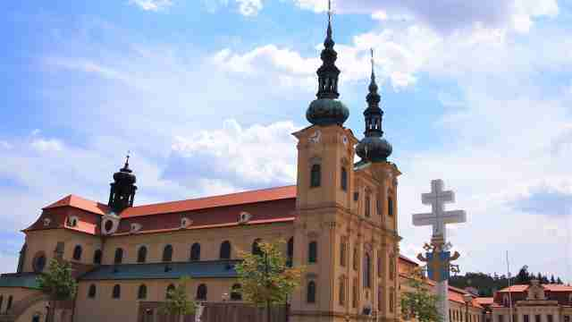

Historie vinařství v našem regionu souvisí s činností
cisterciáckého kláštera na Velehradě.
Boršice byly známy
svým vinařstvím, které cisterciáci systematicky zaváděli už od 13.
století.
Umění pěstovat révu a vyrábět dobré víno se v naší
rodině dědí od nepaměti.
Známým vinařským odborníkem byl
pradědeček Ondřej Tománek.